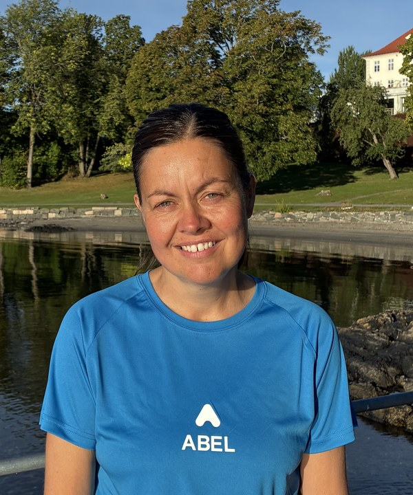
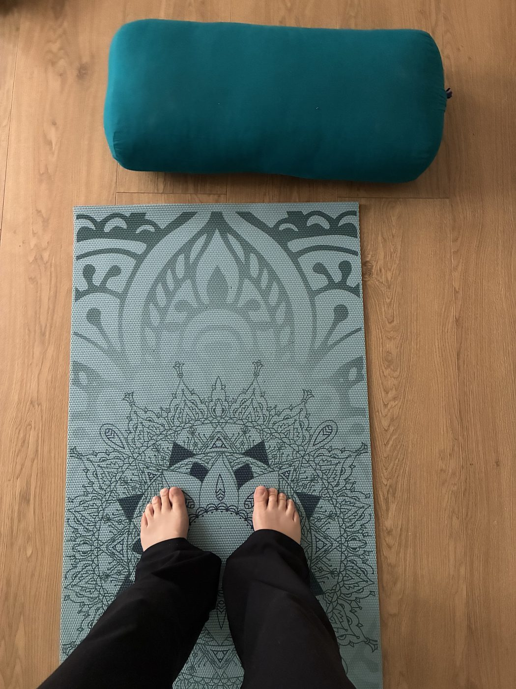

Helseveiledning for små, gjennomførbare skritt mot bedre helse og hverdag.
20 år med å se mennesker gjennom endring. Nå er blikket mitt rettet mot hele deg.
20+
års erfaring
Din veileder

Hei, og velkommen til deg! Jeg heter Silje Merete og er utdannet pedagog og leder. Jeg har i over 20 år veiledet mennesker gjennom prosesser der de ønsker endring i livet sitt. Det å få være med på reisen når mennesker finner sin nye hverdag, er det som driver meg.
Sammen ser vi på hvordan søvn, stress, kosthold, fysisk aktivitet og andre vaner påvirker hverdagen din, og finner fram til det som passer for akkurat ditt liv, i ditt eget tempo, og med respekt for at du kjenner deg selv best. Alt vi snakker om er underlagt taushetsplikt, så du kan kjenne deg trygg.
Jeg har en cand.mag. i barnevernspedagogikk og utviklingsstudier, med videreutdanning i veiledning og ledelse.
Jeg har hele tiden arbeidet tett med mennesker i utvikling, blant annet som leder i barnehage, og det har gitt meg god trening i å møte mennesker der de er, og i å skape rom hvor det er trygt å snakke om endring.
I dag er jeg i siste avsluttende del av videreutdanningen som helseveileder, der jeg bygger videre på pedagogikk- og ledelseserfaringen min, med et konkret fokus på hvordan man kartlegger vaner og støtter varig endring over tid.
Metodikk
Helseveiledning handler om å støtte og motivere til å ta gode valg for egen helse, gjennom samtale, kunnskap og konkrete, realistiske mål som bygger på det som allerede fungerer i livet ditt. Målet er å hjelpe deg med å finne dine gode vaner og din egen vei videre.
Vi ser sammen på hvordan hverdagen din ser ut i dag (søvn, kosthold, aktivitet, stress og relasjoner), blant annet med helsehjulet.
Gjennom samtale utforsker vi dine egne grunner til endring, og det som allerede fungerer i livet ditt.
Sammen setter vi konkrete, realistiske mål tilpasset akkurat din situasjon og ditt eget tempo.
Faste, korte oppfølgingssamtaler hjelper deg å bygge vaner som varer, ikke bare nå kortsiktige mål.
Denne tilnærmingen bygger på metodikken fra Abel Instituttet, som utdanner helseveiledere i Norge.
Mitt motto
Din framtid skapes av vanene du gjentar, ikke de kortsiktige målene du setter.
Hva jeg tilbyr

Individuell helseveiledning med utgangspunkt i dine egne mål, enten det handler om søvn, aktivitet, kosthold eller generell hverdagshelse.
Foredrag, kurs og oppfølging tilpasset arbeidsplassen, med fokus på bærekraftige helsevaner for ansatte.
Praktisk info
Vi blir kjent, og kartlegger sammen hvordan hverdagen din ser ut i dag og hva du ønsker å jobbe med.
Første oppfølgingssamtale tar ca. 30 min, deretter korte, faste samtaler på ca. 15 min der vi følger opp målene dine og justerer kursen underveis.
Ved behov er det også mulig med kontakt mellom samtalene.
Samtalene foregår først og fremst digitalt, men det er også mulig å møtes fysisk i Drammen.
Verktøy og skjema
De fleste verktøyene under krever en kode fra meg, og hvert tema har sin egen kode. Kontakt meg for å få kode →
Interaktivt hjul der du selv vurderer åtte områder av helsen din, fra 1 til 10.
Krever kode fra Silje Merete
Interaktivt hjul der du selv vurderer fem sentrale levevaner (trening, kosthold, søvn, stressmestring og relasjoner) fra 1 til 10.
Krever kode fra Silje Merete
Kartlegging av menneskene rundt deg, mulige mål og aktuelle tiltak for bedre sosial kontakt og relasjoner.
Krever kode fra Silje Merete
Skjema for én ukes selvregistrering av søvn og kveldsvaner.
Krever kode fra Silje Merete
Ukentlig logg der du registrerer søvnkvalitet og stressnivå side om side, for å se sammenhengen mellom dem.
Krever kode fra Silje Merete
Skjema for 7 dagers selvregistrering av situasjon, intensitet og hva som fyller og tømmer stresskoppen.
Krever kode fra Silje Merete
Cohens validerte spørreskjema med 10 spørsmål om hvor stresset du har opplevd den siste måneden.
Krever kode fra Silje Merete
Skjema for å registrere situasjon, automatisk tanke, følelse og atferd, og prøve ut en mer balansert alternativ tanke.
Krever kode fra Silje Merete
Skjema for 7 dagers registrering av fysisk aktivitet, varighet og opplevd anstrengelse, og hva som gjør det lettere eller vanskeligere å være i bevegelse.
Krever kode fra Silje Merete
Skjema for 7 dagers avskrift av skritt, aktive minutter, hvilepuls og søvn fra egen helse-app eller aktivitetsklokke.
Krever kode fra Silje Merete
Tidtaker og loggverktøy for 6-minutters gangtest. Mål utholdenhet og følg utviklingen over tid.
Krever kode fra Silje Merete
Metronom, tidtaker og loggverktøy for YMCA 3-minutters step-test. Mål kondisjon og følg utviklingen over tid.
Krever kode fra Silje Merete
Beregn estimert 1RM med Brzycki-formelen, og følg utviklingen i maksimal styrke per øvelse over tid.
Krever kode fra Silje Merete
Tidtaker og telleknapp for 30-sekunders sit-to-stand-test. Mål benstyrke og funksjon, og følg utviklingen over tid.
Krever kode fra Silje Merete
Registrer opplevd anstrengelse med Borgs CR10-skala, og følg utviklingen i treningsintensitet per aktivitet over tid.
Krever kode fra Silje Merete
Skjema for kartlegging av hva, hvor mye, når og hvorfor du spiser, for én vanlig hverdag og én vanlig helgedag.
Krever kode fra Silje Merete
Grundigere skjema for kartlegging av hva, hvor mye, når og hvorfor du spiser, for 3 vanlige hverdager og 1 vanlig helgedag.
Krever kode fra Silje Merete
Skjema for 3 dagers registrering av sult- og metthetsskala før og etter måltider, samt hvor tilstedeværende du var mens du spiste.
Krever kode fra Silje Merete
Skjema for 3 dagers registrering av porsjonsstørrelser med hånden som målestokk: grønnsaker, protein, karbohydrater og fett.
Krever kode fra Silje Merete
Skjema for 3 dagers avkrysning av hvilke matvaregrupper som var med i måltidene dine, ut fra tallerkenmodellen.
Krever kode fra Silje Merete
Skjema for 3 dagers registrering av spisevindu og mellommåltider, og om de kom av sult eller av følelser og vaner.
Krever kode fra Silje Merete
To enkle, animerte pusteøvelser for ro og stressmestring: firkantpusting (4×4) og pust inn på 2, ut på 4.
Viparita Karani (en enkel, passiv øvelse som roer nervesystemet raskt ved akutt stress og uro), med forklaring og tidtaker.
Rolig yoga-inspirert strekk-sekvens for hele kroppen, med styrt tidtaker gjennom hver øvelse. Fin å starte eller avslutte dagen med.
Egenmassasje for bindevev og fotsåle, med tidtaker per fot. Bra for stram muskulatur og til forebygging av hælsmerter.
Kort øvelsesserie du kan gjøre rett fra stolen, med styrt tidtaker gjennom hver øvelse. Fin pause i en arbeidsdag med mye stillesitting.
Den klassiske solhilsen fra yoga (Surya Namaskar), 12 øvelser knyttet sammen med pusten, med forklaring og illustrert oversikt i sirkel rundt sola.
Hvorfor nå
Helseveiledning er en investering i deg selv, akkurat som et medlemskap på et treningssenter, hvis du bruker det. I helseveiledningen går jeg veien sammen med deg, og du vil kunne få det livet du bestemmer deg for.
Send meg en e-postTa kontakt
Ta gjerne kontakt for en uforpliktende prat om helseveiledning. Du trenger ikke vite nøyaktig hva du lurer på. Send meg en e-post, så finner vi ut av resten sammen.
Send meg en e-postSilje Merete (Smart) Binder
silje.merete.binder@gmail.com